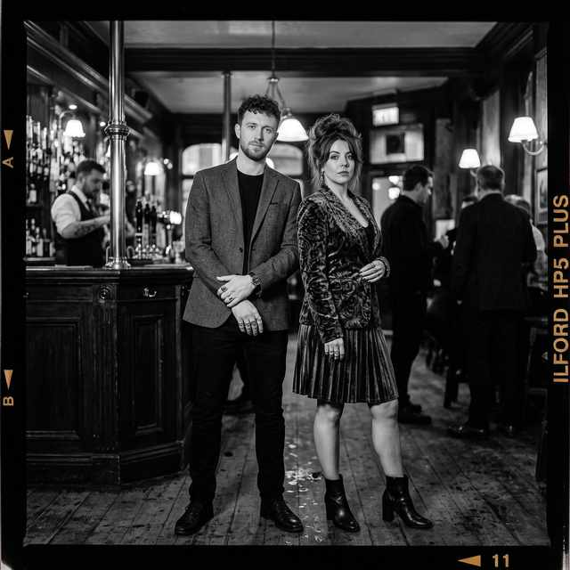
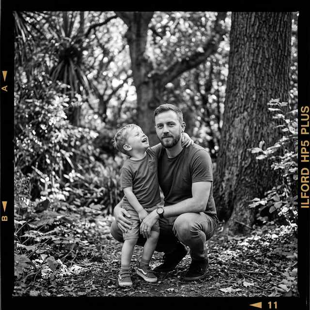
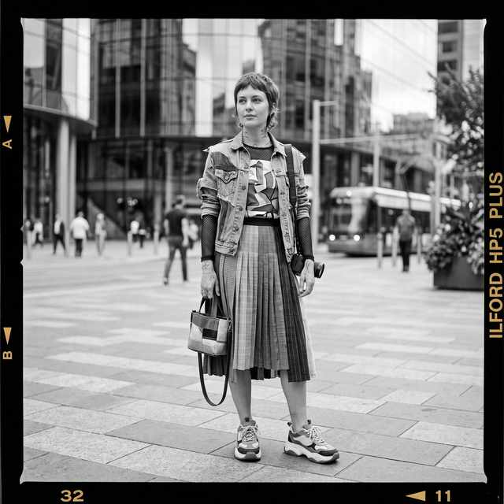

12 JAN 2026
A pair of wardrobe stylists between fittings. They dress like the clothes are the story: asymmetric black, patchwork velvet, combat boots, nothing off a rack. The roll caught them on cobblestone, still in the look from the last call.


Data sheet /
Snaps
Frame24
Made in small batches /
Hand poured in Canada
Frames off the roll, shot between batches.
12 JAN 2026
A pair of wardrobe stylists between fittings. They dress like the clothes are the story: asymmetric black, patchwork velvet, combat boots, nothing off a rack. The roll caught them on cobblestone, still in the look from the last call.

03 MAR 2026
Session musicians after a late rehearsal. Soft wool blazer, a velvet jacket, rings on every finger, pub light. Tailored without trying — the kind of clothes that survive a last set and still look composed at last call.

19 APR 2026
A documentary stills shooter and his kid on a Sunday walk. Soft tees, worn denim, sneakers that have already seen a trail. Clothes that survive the woods and still look like themselves when the light drops.

28 MAY 2026
A freelance street photographer between rolls. Layered denim, mesh sleeves, pleated panels, chunky sneakers; camera always in hand. City plaza, one frame before the next tram.
14 JUL 2026
Two makers who live in flannel and patchwork — basket bag, cargo pants, pins on a messenger flap, thrift-first Pacific Northwest. Shot on the brick outside the coffee shop they always walk past.
22 AUG 2026
A night-out art director between venues. Lace camisole, mini skirt, stilettos, big hoops; a candid laugh, no pose. Wet pavement, one streetlamp, the roll still running.